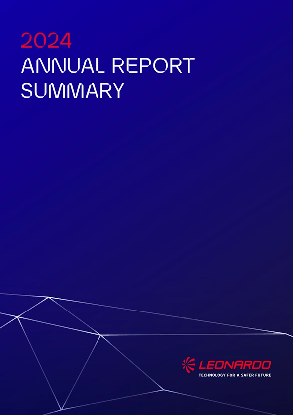
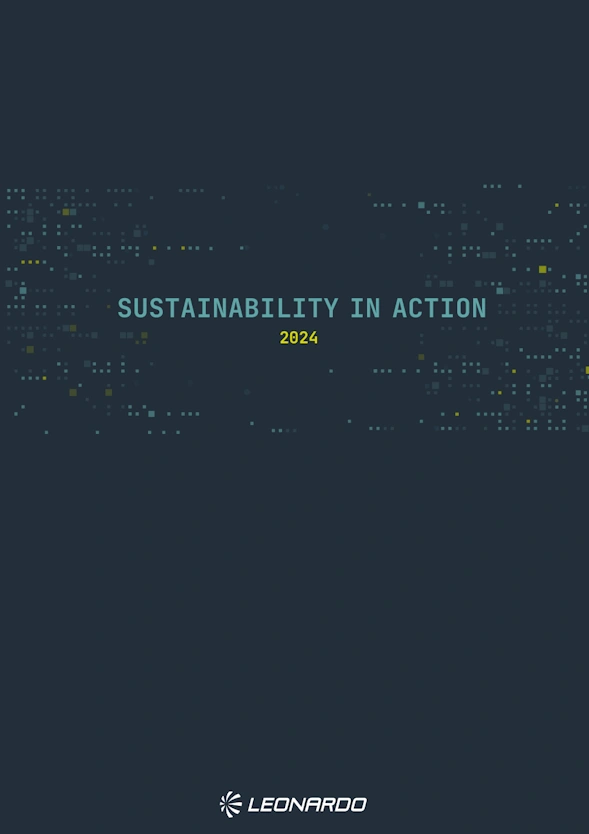
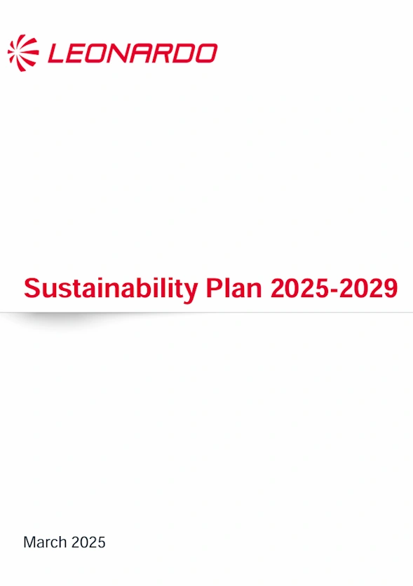

In questa pagina troverai l'archivio dei report ESG pubblicati da Leonardo SpA e disponibili per la pubblica consultazione.
Scegli il report di tuo interesse, quindi clicca su di esso per accedere alla pagina di dettaglio del report dove potrai leggere una breve descrizione, un riassunto fornito dalla IA e avere la possibilità di consultarlo integralmente o scaricarlo in locale sul tuo dispositivo.
-

Sintesi di Bilancio
Documento di sintesi indirizzato agli stakeholder relativa alla crescita solida, innovazione digitale, sostenibilità, sicurezza globale.
-

Sustainability in Action
Cambiamenti economici, geopolitici, ambientali e sociali in atto a livello globale rendono il processo di transizione sostenibile non più rinviabile
-

Sustainability Plan
Il piano per la sostenibilità 2025-2029 definisce le linee guida per il raggiungimento degli obiettivi in termini sociali, governance, sicurezza e ambiente